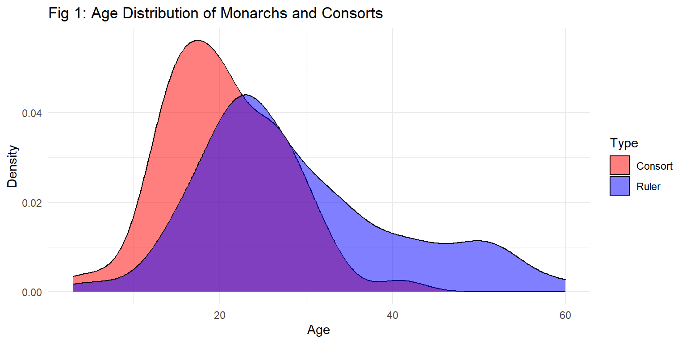
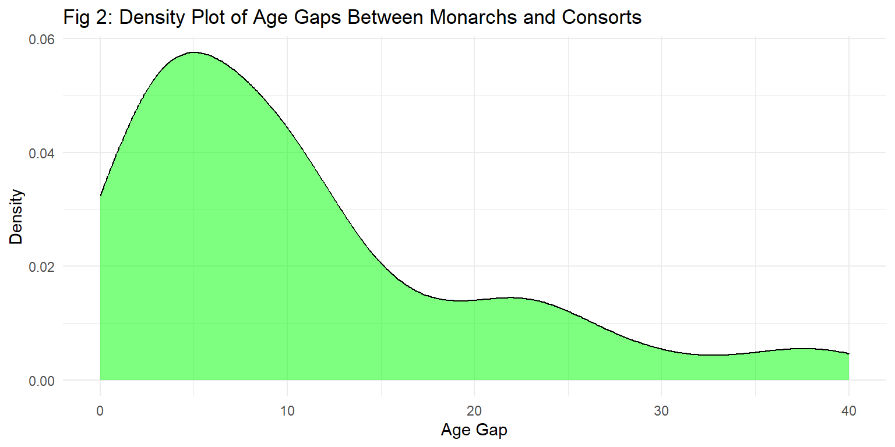

This report uses a data set from GitHub’s Tidy Tuesdays called “English Monarchs and Marriages” to determine the average age of marriage of English monarchs and their consorts at the time of marriage, as well as the oldest and youngest ages of both monarchs and consorts at the time of marriage.
The link for the data set can be found here: https://raw.githubusercontent.com/rfordatascience/tidytuesday/main/data/2024/2024-08-20/english_monarchs_marriages_df.csv.
Loading Libraries and Data
Firstly, I load the libraries I need for my analysis.
As I do not know the data well, I get an overview of the variables and structure.
Code
# Load data from Githubenglish_monarchs_marriages_df <- readr::read_csv('https://raw.githubusercontent.com/rfordatascience/tidytuesday/main/data/2024/2024-08-20/english_monarchs_marriages_df.csv')
Rows: 83 Columns: 5
── Column specification ────────────────────────────────────────────────────────
Delimiter: ","
chr (5): king_name, king_age, consort_name, consort_age, year_of_marriage
ℹ Use `spec()` to retrieve the full column specification for this data.
ℹ Specify the column types or set `show_col_types = FALSE` to quiet this message.
Code
# Check variables and data structuresummary(english_monarchs_marriages_df)
king_name king_age consort_name consort_age
Length:83 Length:83 Length:83 Length:83
Class :character Class :character Class :character Class :character
Mode :character Mode :character Mode :character Mode :character
year_of_marriage
Length:83
Class :character
Mode :character
From the above, I can see that there are five variables: king_name, king_age, consort_name, consort_age and marriage_year. I also can see that there are 83 rows, assuming that n = 83. Some monarchs and consorts seem to have married more than once, but this is not a problem as I am interested in ages when married (whether once or more).
Cleaning and Preparing Data
I notice that there are some missing values indicated by “?”, “-” or “NA”. I also notice that some values are not certain, indicated with “(?)”. I proceed to create a clean data set by removing the rows with incomplete data, but keep the uncertain dates as best estimates.
Code
# Ensure that variables are treated as characters to filter out (?)english_monarchs_marriages_df$king_age <-as.character(english_monarchs_marriages_df$king_age)english_monarchs_marriages_df$consort_age <-as.character(english_monarchs_marriages_df$consort_age)english_monarchs_marriages_df$year_of_marriage <-as.character(english_monarchs_marriages_df$year_of_marriage)# Remove (?) from uncertain dates and change variable names to shorter / more sensible (some queens among the king list)emm_clean <- english_monarchs_marriages_df %>%mutate(ruler_age =gsub("\\(?)", "", king_age)) %>%mutate(consort_age =gsub("\\(?)", "", consort_age)) %>%mutate(marriage_year =gsub("\\(?)", "", year_of_marriage))# Render rows with ? or - missing in age or year related columnscolumns_to_clean <-c("ruler_age", "consort_age", "marriage_year")emm_clean[columns_to_clean] <-lapply(emm_clean[columns_to_clean], as.character)emm_clean[columns_to_clean] <-lapply(emm_clean[columns_to_clean], function(x) { x[x =="–"] <-NA x[x =="?"] <-NAreturn(x)})# Remove rows with NA emm_clean <-na.omit(emm_clean)# (?) not entirely removed, manually replace with numberemm_clean$ruler_age <-replace(emm_clean$ruler_age, emm_clean$ruler_age =="50(?", "50")emm_clean$marriage_year <-replace(emm_clean$marriage_year, emm_clean$marriage_year =="1044(?", "1044")# Rename king_name to align with ruler_nameemm_clean <- emm_clean %>%rename(ruler_name = king_name) # Create final data set with columns in orderemm_final <- emm_clean %>%select (ruler_name, ruler_age, consort_name, consort_age, marriage_year)# Check datasetsummary (emm_final)
ruler_name ruler_age consort_name consort_age
Length:58 Length:58 Length:58 Length:58
Class :character Class :character Class :character Class :character
Mode :character Mode :character Mode :character Mode :character
marriage_year
Length:58
Class :character
Mode :character
Following the removal of missing values, there is some data loss with n now at 58.
Analysis and Findings
Ages of Monarchs and Their Consorts
This sections determines the oldest and youngest monarch and consort age, as well as the average age of monarchs and consorts at the time of marriage. In addition, I determine who the youngest and oldest monarchs and consorts at the time of their marriage were.
Code
# Make sure that relevant variables are treated as numericemm_final$ruler_age <-as.numeric(emm_final$ruler_age)emm_final$consort_age <-as.numeric(emm_final$consort_age)# Determine the min, max and average using describeage_desc_table <-describe(emm_final[, c("ruler_age", "consort_age")])# Convert the describe() output to a data frameage_desc_table_df <-as.data.frame(age_desc_table)# Save the summary table as a CSV filewrite.csv(age_desc_table_df, "tables/age__desc_table.csv", row.names =FALSE)# Display the table using kablekable(age_desc_table, align ="lcccccc", caption ="Table 1: Descriptive Statistics for Monarch and Consort Ages")
Table 1: Descriptive Statistics for Monarch and Consort Ages
vars
n
mean
sd
median
trimmed
mad
min
max
range
skew
kurtosis
se
ruler_age
1
58
29.27586
11.742550
26
28.45833
9.6369
5
60
55
0.6935554
-0.1809633
1.5418723
consort_age
2
58
20.44828
6.908353
20
20.27083
7.4130
3
41
38
0.2917135
0.2566839
0.9071113
From the above, we can determine that the youngest monarch was 5 at the time of marriage (minimum) and the oldest 60 at the time of marriage (maximum), while the youngest consort was 3 at the time of marriage and the oldest 41 at the time of marriage. The average age of marriage for monarchs is 29 (rounded mean) and for consorts 21 (rounded mean), showing that on average monarchs are older than their consorts. The standard deviation for monarch ages (12) show a greater spread in ages for monarchs than the standard deviation (7) for consort ages. With a slightly larger mean than median for monarch ages (29 greater than 26), the results are positively skewed for this variable, as well as a slight positive skew for consort ages (21 greater than 20). The spread and distribution are visualised in the graph below.
Code
# Graph showing distribution# Reshape the data for plottingplot_data <-data.frame(Age =c(emm_final$ruler_age, emm_final$consort_age),Type =c(rep("Ruler", length(emm_final$ruler_age)), rep("Consort", length(emm_final$consort_age))))# Create the density plotage_distr_plot <-ggplot(plot_data, aes(x = Age, fill = Type)) +geom_density(alpha =0.5) +# Add transparency to distinguish overlapping areaslabs(title ="Fig 1: Age Distribution of Monarchs and Consorts",x ="Age",y ="Density") +theme_minimal() +scale_fill_manual(values =c("Ruler"="blue", "Consort"="red"))# Save the plot as a PDF fileggsave("figures/age_distr_plot.pdf", plot = age_distr_plot, width =8, height =6)# Displayage_distr_plot

The above graph shows that the ages of consorts are more tightly packed around the mean than for monarchs, as well as shows the younger mean for consorts than for monarchs.
Now we determine who the youngest and oldest monarchs and consorts were.
Code
# Determine who the youngest and oldest monarchs and consorts were# Find all rulers with the youngest ageyoungest_rulers <- emm_final[which(emm_final$ruler_age ==min(emm_final$ruler_age, na.rm =TRUE)), ]oldest_rulers <- emm_final[which(emm_final$ruler_age ==max(emm_final$ruler_age, na.rm =TRUE)), ]# Find all consorts with the youngest ageyoungest_consorts <- emm_final[which(emm_final$consort_age ==min(emm_final$consort_age, na.rm =TRUE)), ]oldest_consorts <- emm_final[which(emm_final$consort_age ==max(emm_final$consort_age, na.rm =TRUE)), ]# Combine the results into a tableresult_table <-rbind(cbind(Type ="Youngest Ruler", Name = youngest_rulers$ruler_name, Age = youngest_rulers$ruler_age, Marriage_Year = youngest_rulers$marriage_year, Spouse = youngest_rulers$consort_name, Spouse_Age = youngest_rulers$consort_age),cbind(Type ="Oldest Ruler", Name = oldest_rulers$ruler_name, Age = oldest_rulers$ruler_age, Marriage_Year = oldest_rulers$marriage_year, Spouse = oldest_rulers$consort_name, Spouse_Age = oldest_rulers$consort_age),cbind(Type ="Youngest Consort", Name = youngest_consorts$consort_name, Age = youngest_consorts$consort_age, Marriage_Year = youngest_consorts$marriage_year, Spouse = youngest_consorts$ruler_name, Spouse_Age = youngest_consorts$ruler_age),cbind(Type ="Oldest Consort", Name = oldest_consorts$consort_name, Age = oldest_consorts$consort_age, Marriage_Year = oldest_consorts$marriage_year, Spouse = oldest_consorts$ruler_name, Spouse_Age = oldest_consorts$ruler_age))
Create table with results.
Code
# Convert to a data frame for better readabilityresult_table <-as.data.frame(result_table)# Save Table as CSV Filewrite.csv(result_table, "tables/age_table.csv", row.names =FALSE)# Display the table using kablekable(result_table, align ="lcccccc", caption ="Table 2: Youngest and Oldest Monarchs, Consorts, Their Spouses and Year of Marriage")
Table 2: Youngest and Oldest Monarchs, Consorts, Their Spouses and Year of Marriage
Type
Name
Age
Marriage_Year
Spouse
Spouse_Age
Youngest Ruler
Henry the Young King
5
1160
Margaret of France
3
Oldest Ruler
Edward I
60
1299
Margaret of France
20
Youngest Consort
Margaret of France
3
1160
Henry the Young King
5
Oldest Consort
Wallis Warfield Simpson
41
1937
Edward VIII
43
From the above, we can see that the youngest couple at the time of their marriage were Henry the Young King, who was 5 years of age when he married Margaret of France - who was 3 years of age at the time of their marriage in the year 1160. The oldest consort at the time of their marriage was Wallis Simpson who married Edward VIII in the year 1937 at the age of 41. The monarch who was the oldest at the time of their marriage was Edward I - 60 years of age at his time of marriage to Margaret of France (presumably a different Margaret of France to the former), who was 20 at the time of their marriage in the year 1299 - indicating a 40 year age gap at the time of their marriage.
Age Gaps Between Monarchs and Consorts
Following the above, further questions that arise from the large age gap between Edward I and Margaret of France pertain to the spread in age gaps, average age gap, smallest age gap, and largest age gap between monarchs and consorts.
Code
# Create a new variable for the absolute age gapemm_final$age_gap <-abs(emm_final$ruler_age - emm_final$consort_age)# Ensure the variables is numericemm_final$age_gap <-as.numeric(emm_final$age_gap)# Use the describe() function to summarize the age_gap variableage_gap_desc_table <-describe(emm_final$age_gap)# Convert the describe() output to a data frameage_gap_desc_table_df <-as.data.frame(age_gap_desc_table)# Save the summary table as a CSV filewrite.csv(age_gap_desc_table_df, "tables/age__gap_desc_table.csv", row.names =FALSE)# Display the table using kablekable(age_gap_desc_table, align ="lcccccc", caption ="Table 3: Descriptive Statistics for Age Gaps Between Couples")
Table 3: Descriptive Statistics for Age Gaps Between Couples
vars
n
mean
sd
median
trimmed
mad
min
max
range
skew
kurtosis
se
X1
1
58
10.82759
9.690179
8
9.4375
6.6717
0
40
40
1.299469
1.020588
1.272383
The average age gap between couples is 11 years (mean), with the smallest gap 0 years and the largest gap 40 years. The mean is larger than the median, showing a positive skew. With the minimum at 0 and maximum at 40, the standard deviation of 10 shows some spread in age gaps. This is more explored in the following graph.
Code
# Create density plot to show spread in age gapsage_gap_plot <-ggplot(emm_final, aes(x = age_gap)) +geom_density(fill ="green", alpha =0.5) +labs(title ="Fig 2: Density Plot of Age Gaps Between Monarchs and Consorts",x ="Age Gap",y ="Density" ) +theme_minimal()# Save the plot as a PDF fileggsave("figures/age_gap_plot.pdf", plot = age_gap_plot, width =8, height =6)# Displayage_gap_plot

The above graph shows the positive skew in age gaps, as well as clustering around the mean tailing off towards larger age gaps. This indicates that large age gaps was not the norm between monarchs and consorts.
I now look at which couples had the largest and smallest age gaps.
Code
# Find all rows with the largest age gaplargest_gap_rows <- emm_final[which(emm_final$age_gap ==max(emm_final$age_gap, na.rm =TRUE)), ]# Find all rows with the smallest age gapsmallest_gap_rows <- emm_final[which(emm_final$age_gap ==min(emm_final$age_gap, na.rm =TRUE)), ]# Create a table with the resultsgap_table <-rbind(cbind(Gap_Type ="Largest Gap",Ruler_Name = largest_gap_rows$ruler_name,Ruler_Age = largest_gap_rows$ruler_age,Consort_Name = largest_gap_rows$consort_name,Consort_Age = largest_gap_rows$consort_age,Marriage_Year = largest_gap_rows$marriage_year,Age_Gap = largest_gap_rows$age_gap ),cbind(Gap_Type ="Smallest Gap",Ruler_Name = smallest_gap_rows$ruler_name,Ruler_Age = smallest_gap_rows$ruler_age,Consort_Name = smallest_gap_rows$consort_name,Consort_Age = smallest_gap_rows$consort_age,Marriage_Year = smallest_gap_rows$marriage_year,Age_Gap = smallest_gap_rows$age_gap ))# Convert to a data frame for better readabilitygap_table <-as.data.frame(gap_table)# Save Table as CSV Filewrite.csv(gap_table, "tables/gap_table.csv", row.names =FALSE)# Display the table using kablekable(gap_table, align ="lcccccc", caption ="Table 4: Monarch Marriages and Largest and Smallest Age Gaps")
Table 4: Monarch Marriages and Largest and Smallest Age Gaps
Gap_Type
Ruler_Name
Ruler_Age
Consort_Name
Consort_Age
Marriage_Year
Age_Gap
Largest Gap
Edward I
60
Margaret of France
20
1299
40
Smallest Gap
George II
22
Caroline of Ansbach
22
1705
0
Smallest Gap
Victoria
21
Albert of Saxe-Coburg and Gotha
21
1840
0
The couple with the largest age gap is Edward I (also the oldest monarch) and Margaret of France - married in 1299 - with a 40 year age gap. There are two couples with the smallest age gap namely George II and Caroline of Ansbach - married in 1705 - with no age gap (in years, and Victoria and Albert of Saxe-Coburg and Gotha - married in 1840 - also with no age gap.
Summary and Conclusion
In summary, although the youngest monarch and consort to marry were 5 and 3 years of age respectively, the average age of monarchs and consorts - 29 and 21 respectively - coupled with general clustering of data around the mean, show that marriages that young were not common over the course of history. However, the ages of consorts seemingly were in general younger than the monarchs’ ages.
Given the age gap of the oldest monarch at the time of marriage with his consort - a 40 year age gap - coupled with the difference in means between the ages of consorts and monarchs, an analysis of age gaps were done.The largest age gap was 40 years and the smallest 0 years. With a mean of 11 years, the average age gap between monarchs and consorts confirms a general trend of older monarchs marrying younger consorts.